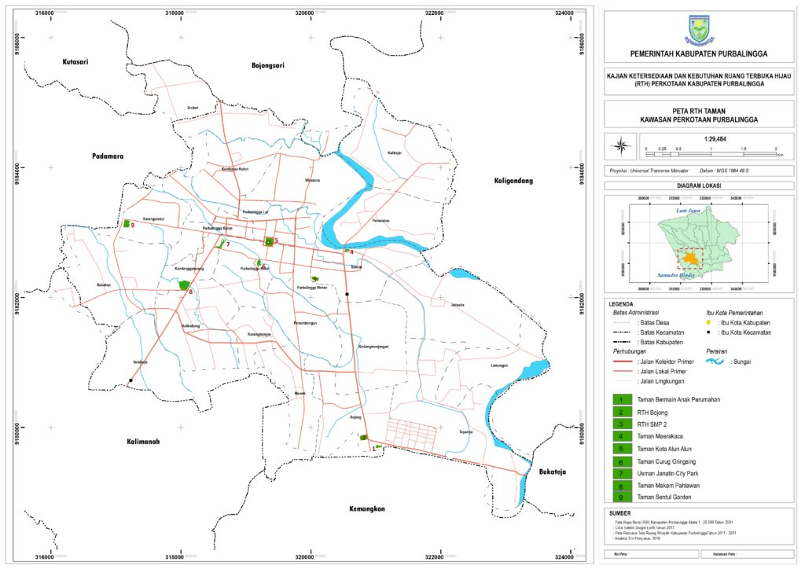

RTH Taman Kota
Taman dapat diartikan sebagai tanaman yang ditanam dan ditata sedemikian rupa, baik sebagian maupun semuanya hasil rekayasa manusia untuk mendapatkan komposisi tertentu yang indah. Taman dapat berupa taman aktif maupun taman pasif.
Taman aktif adalah salah satu bentuk dari ruang terbuka hijau di perkotaan yang memiliki beberapa fasilitas penunjang untuk rekreasi dan olah raga, seperti : bangunan serba guna, kolam dan berbagai bentuk wadah air, permainan anak, gazebo. Vegetasi yang ada di dalamnya selain berfungsi sebagai fungsi estetis dan penghijauan, juga berfungsi sebagai pelindung, peneduh dan pengarah jalur taman yang ada.
Taman Pasif adalah salah satu bentuk ruang terbuka hijau kota yang hanya dilengkapi dengan komposisi tanaman tertentu yang berfungsi sebagai elemen penghijauan dan estetis saja dan tidak dilengkapi dengan sarana fasilitas penunjang bagi pengunjung. Keberadaan taman lebih banyak berfungsi sebagai elemen visual kota saja.
Taman lingkungan yang ada di Perkotaan Purbalingga berdasarkan identifikasi tahun 2018 sebagai contoh adalah sebagai berikut :
| No | Nama Taman Kota | Luas (Ha) | Lokasi | Keterangan |
|---|---|---|---|---|
| 1 | Taman Jompo | 0,06 | Ds. Jompo, Kec Kalimanah | |
| 2 | Taman Maerakaca | 0,12 | Kel. Bancar, Kec Purbalingga | |
| 3 | Bundaran Depan Kodim | 0,01 | Kel. Bancar, Kec Purbalingga | |
| 4 | Taman Dagang Bobotsari | 0,05 | Ds. Gandasuli, Kec Bobotsari | |
| 5 | RTH Hijau SMP 2 | 0,54 | Kel Purbalinga Wetan, Kec Purbalingga | |
| 6 | RTH Bojong | 0,94 | Kel Bojong, Kec Purbalingga | |
| 7 | Tama Bermain Anak Perumahan | 0,02 | Kel Bojong, Kec Purbalingga | |
| 8 | Taman Curug Gringsing | 0,37 | Kel Purbalingga Kidul, Kecamatan Purbalingga | SK. Bupati No 660.1/1991 Tahun 2011 |
| 9 | Taman Sentul Garden | 0,6 | Kel Karangsentul, Kec Padamara | SK. Bupati No 660.1/1991 Tahun 2011 |
| 10 | Taman Kota Alun-alun | 1,37 | Kel Purbalingga Kidul, Kecamatan Purbalingga | SK. Bupati No 660.1/1991 Tahun 2011 |
| 11 | Usman Janatin City Park | 1,21 | Kel Kandanggampang, Kec Purbalingga | SK. Bupati No 660.1/1991 Tahun 2011 |
| 12 | Taman Depan Makam Pahlawan | 0o,81 | Kel Kandanggampang, Kec Purbalingga |



.jpg)